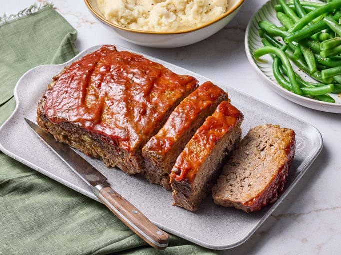

Easy Meat Loaf Recipe

Description
Get back to basics with this easy meatloaf recipe.
It's quick, traditional, delicious, and it's sure to please everyone at your table.
Ingredients
- 1 ½ pounds ground beef
- 1 large egg
- 1 onion, chopped
- 1 cup milk
- 1 cup dried bread crumbs
- salt and pepper to taste
- ⅓ cup ketchup
- 2 tablespoons brown sugar
- 2 tablespoons prepared mustard
Steps
step one
Gather the ingredients. Preheat the oven to 350 degrees F (175 degrees C).
Lightly grease a 9x5-inch loaf pan.step two
Combine ground beef, onion, milk, bread crumbs, and egg in a large bowl,
and season with salt and pepper. Press mixture evenly into the prepared loaf pan.step three
Stir ketchup, brown sugar,
and mustard together in a small bowl until smooth, and spread evenly over the meatloaf.step four
Bake in the preheated oven until no longer pink in the center, about 1 hour.
An instant-read thermometer inserted into the middle reads at least 160 degrees F (70 degrees C).step five
Serve hot and enjoy!
Home